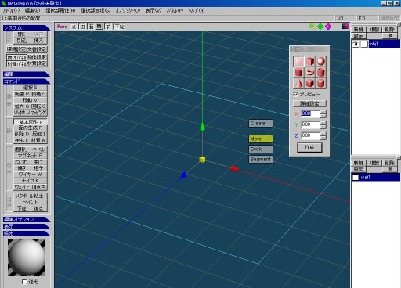
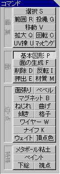
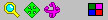
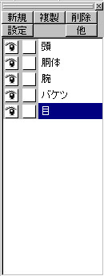
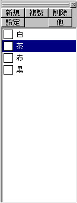

画面説明
インストールが完了したら
|
はじめに、メタセコイアのインターフェース画面のおおまかな説明をします。 初めて起動した時は「入門モード」になっていますが、今回の実習には問題ありません。  作業ウィンドウに表示されている赤い線がＸ軸、緑の線がＹ軸、青い線がＺ軸です。 色のついた矢印は「ハンドル」と言い、これを使うと操作をＸＹＺ軸の一方向に制限することが できます。 |
コマンドパネルモデリングに使用する操作コマンドが格納されています。ほとんどの場合において操作コマンドを使用しますが、
メニューなどから特殊な操作を行うこともあります。 |  |  |
作業ウィンドウのコントロール「虫眼鏡」アイコンは、作業ウィンドウの拡大・縮小を行います。 |
 |
表示コントロール「Pers」と「Ortho」は作業ウィンドウの平行投影、透視投影を切り替えます。 |
|
オブジェクトパネル形状を格納するオブジェクトを管理します。 |
 |
材質パネル形状に設定する材質を管理します。 |
 |